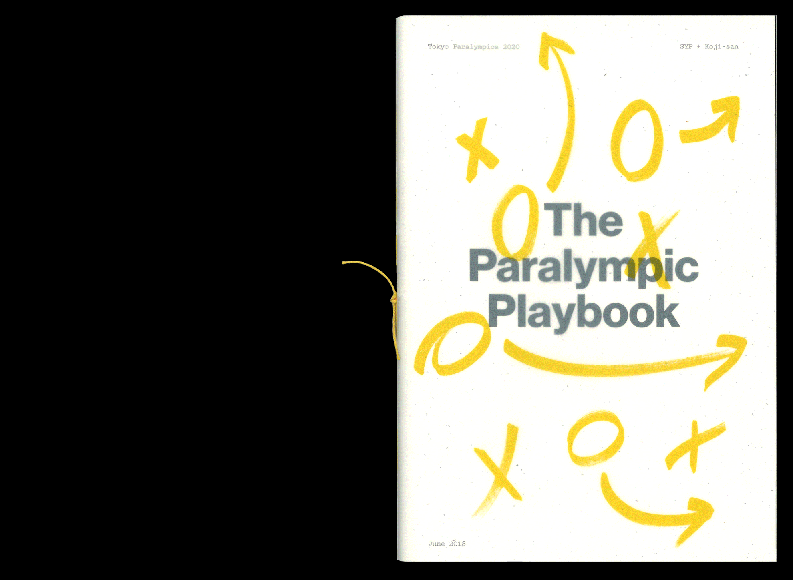
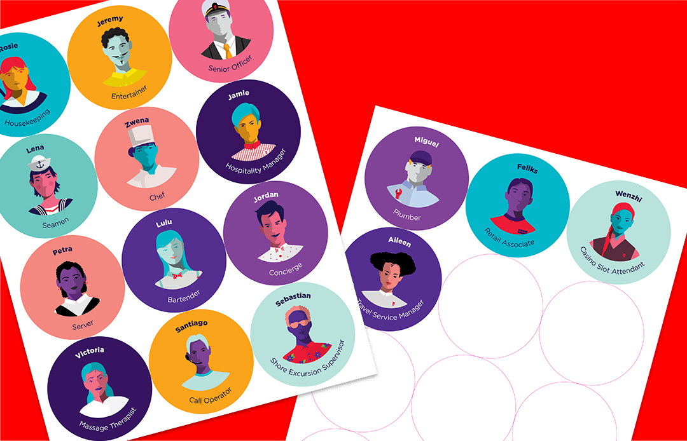
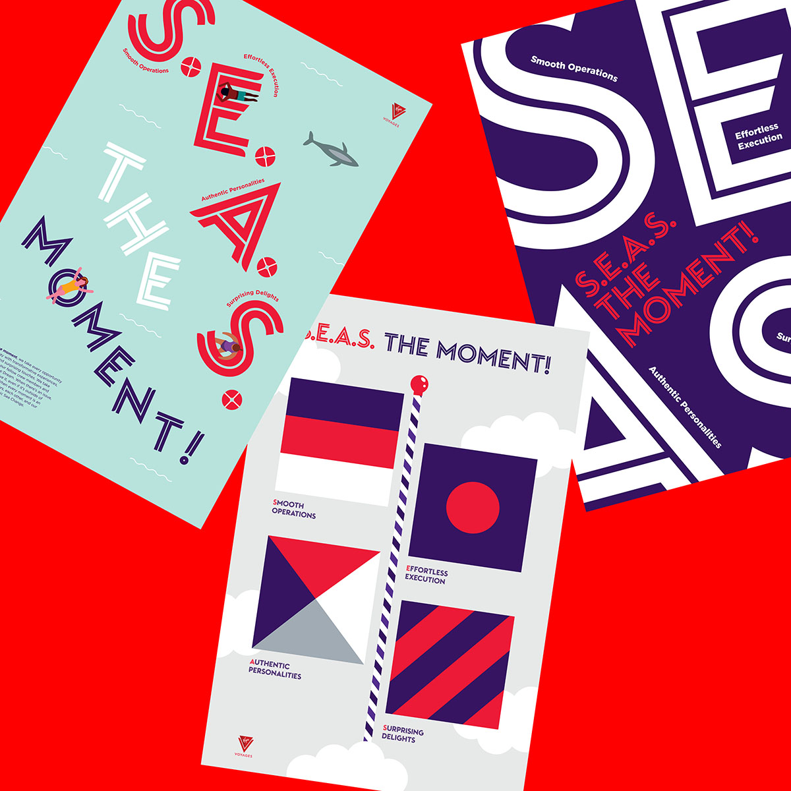
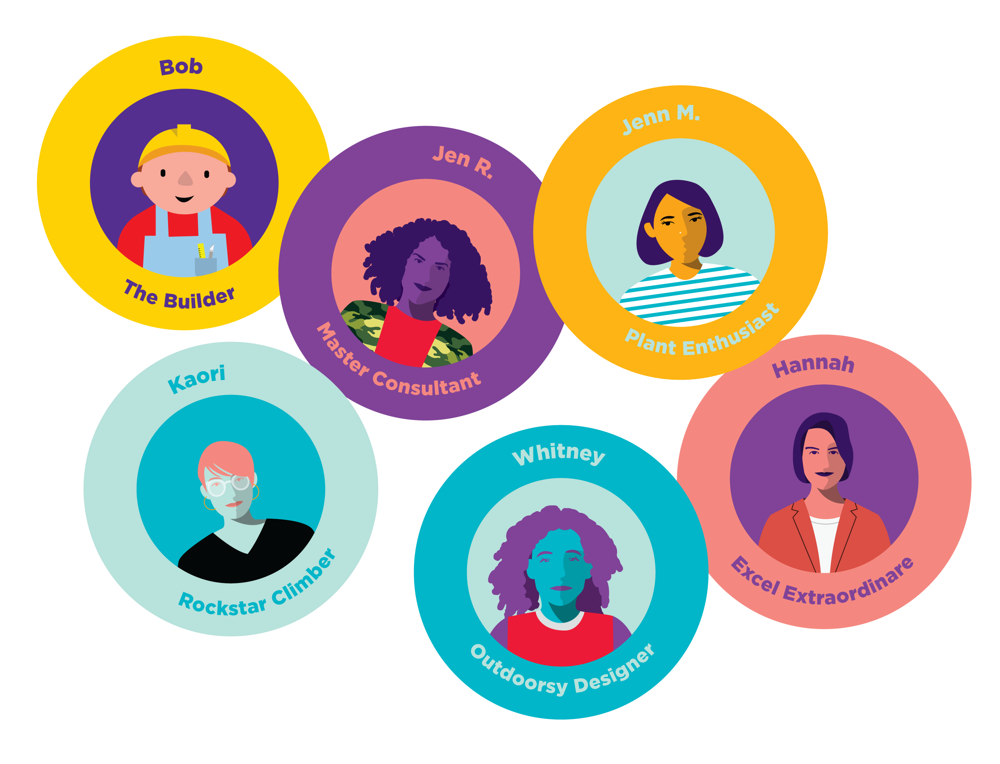

Arthur's SYP artifact
The following is about my experience at SYPartners — Karishma
asked us (Yasmeen & I) to leave something behind. Something I could
leave behind for other interns, or for fellow SYPeas.
-------------------------------------------------------
A list of Thanks Yous.
Dear SYP SF,
Thank you for the past 10 weeks.
Thank you to everyone for being patient with this little intern.
Thank you for mentoring, caring, and teaching me what it means to be an SYPea.
Thank you for challenging me to design better, think better, and be better.
-Thank you OPs for being so caring and showing such warm hospitality.
-Thank you IT team for 💻.
-Thank you production team for being so patient with my impatient book making skills.
-Thank you SF kitchen for providing me with avocados daily.
-Thank you Rie, Aki, Corley, and Karishma for letting me work on the Paralympics, and being patient with my cluelessness.
-Thank you Chris, Lisa, and Kat for bringing my illustrations to life.
-Thank you VV team, Whitney, Hannah, Jen R., Jenn M., Kaori, and Bob for the wonderful voyage.
-Thank you for sending me to Florida!
-Thank you for the the exciting times and
-Bonus Thank you to Bob for yelling at me in UNO.
-Thank you Willie for being such a reliable printer <3.
-------------------------------------------------------
The Paralympic Playbook

⤷Thank you Corley for being my first duo and being super patient with me.
⤷ Thank you Karishma for joining this project and helping this lost intern.
-------------------------------------------------------
Virgin Voyages
 ⤷ The worksheet!
⤷ The worksheet!

⤷ The stickers!
 ⤷ The workshop!
⤷ The workshop!

⤷ The posters!

⤷ The team.
-------------------------------------------------------
I don't know where I'll be in the future, but know that I'll be blasting off!
Deuces!
Keep in contact!
email me at akim@risd.edu
linkedIn at 🔗
If you're into fb 👤 and instagram 📷 — I'm over here as well!